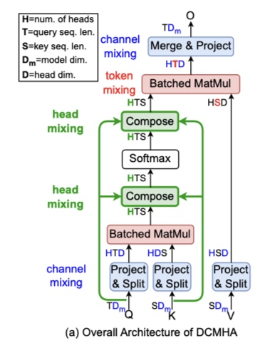

通过动态组合注意力头来提高模型表达能力
核心：DCMHA 的核心是一个 Compose 函数，它以输入相关的方式转换注意力分数和权重矩阵。
Head Composition by Transforming Attention Matrices
Notation
- \(T\)：query序列长度
- \(S\)：key序列长度
- \( A_h \in \mathbb{R} ^{T \times S}\)：具有\(H\)个头的MHA得到的第\(h\)个头的注意力矩阵
- \(A = Stack (\{ A_h \} ^H _{h=1}) \in \mathbb {R} ^{H \times T \times S}\)：\(H\)个注意力矩阵的堆叠
- \(A_{:ij} = A[:, i, j] \in \mathbb {R} ^H\)：query向量\(Q_i\)和key向量\(K_j\)的注意力向量
通过注意力矩阵组合，可以得到新的H个注意力矩阵\(\{ A'_h \} ^H _{h=1}\)，其中第\(h\)个组合矩阵\(A'_h\)是基础的\(H\)矩阵的线性组合：
\( \begin{align} A'_h = \sum ^H _{j=1} C_{hj} A_j \end{align}\)
这里\(C \in \mathbb {R} ^{H \times H}\)被称为组合映射。
图示：
- (a)中Head3和Head8时共同激励的关系；Head2和Head5体现了共同禁止关系。当两个头正相关时：一个头激活，另一个头也激活；反之亦然。
- (b)展示一对多的共享：Head6向Head4和Head7共享了相同的权重；
- (c)展示多对一的共享：Head3和Head7对Head1共享了相同的权重。
\(C \in \mathbb {R} ^{H \times H}\)的作用像一个\( 1 \times 1\)的卷积层。
并且可以得到：由组合图\(C \in \mathbb {R} ^{H \times H}\)对注意力分数\(\{ A_i \} ^H _{i=1}\)进行组合的效果，和以下相同：通过连接现有投影\(\{ W^Q_i, W^K_i \in \mathbb {R} ^{D_m \times D_h} \} ^H _{i=1}\)，组成新的\(H\)倍维度的投影\(\{ \widetilde {W} ^Q_i, \widetilde {W} ^K_i \in \mathbb {R} ^{D_m \times H D_h} \} ^H _{i=1}\)，如下所示：
\( \begin{align} \widetilde {W} ^Q_i = \mathop{Concat} \limits_{j \in [H]} [C_{ij} W^Q_j], \; \widetilde {W} ^K_i = \mathop{Concat} \limits_{j \in [H]} [C_{ij} W^K_j] \end{align}\)
同理，对于注意力权重的组合，也可以用以下组合来代替：
\( \begin{align} \widetilde {W} ^V_i = \mathop{Concat} \limits_{j \in [H]} [C_{ij} W^V_j], \; \widetilde {W} ^O_i = \mathop{Concat} \limits_{j \in [H]} [C_{ij} W^O_j] \end{align}\)
Dynamically Composable Multi-Head Attention
DCMHA核心：对已给定的\(Q_i\)和\(K_j\)，将其注意力向量\(A_{:ij} \in \mathbb {R} ^H\)通过可训练参数\(\theta\)转换为一个新向量\(A'_{:ij}\)：
\( \begin{align} A'_{:ij} = Compose (A_{:ij}, Q_i, K_j; \theta) \end{align}\)
也可以将其更细分为两个组合函数：当输入相关的交叉头开始作用时，一个应用于\(softmax\)前的注意力分数张量\(A^S\)上，另一个应用于\(softmax\)后的注意力权重张量\(A^W\)上：
\( \begin{align} A^S_i = \frac {QW^Q_i (KW^K_i)^T} {\sqrt {D_h}}; \; A^S = Stack(A^S_1, ..., A^S_H) \end{align}\)
\( \begin{align} A^S = Compose(A^S, Q, K; \theta _{pre}) \end{align}\)
\( \begin{align} A^W = Softmax(A^S, dim = -1) \end{align}\)
\( \begin{align} A^W = Compose(A^W, Q, K; \theta _{post}) \end{align}\)
\( \begin{align} O^S_i = A^W_i(VW^V_i); \; O = Stack(O_1, ..., O_H) \end{align}\)
这里\(W^Q_i, W^K_i, W^V_i \in \mathbb {R}^{D_m \times D_h}\)是第\(i\)个头的投影矩阵，\(W^O \in \mathbb {R} ^{H D_h \times D_m}\)是输出投影矩阵。沿着张量的第一维进行\(Stack\)，最后一维进行\(Concat\)，如下图所示：

Compose
对于Compose函数内部实现：
首先将\(A_{:ij}\)经过5个转换：
-
由与\(Q_i\)和\(K_j\)均无关的权重矩阵\(W_b\)进行投影，可以理解为一个base compose；
-
\(A_{:ij}\)首先与\(w_{q1} \in \mathbb {R}^{H \times R}\)进行一个较低维度的投影，接着又与\(w_{q2} \in \mathbb {R}^{R \times H}\)进行维度恢复，从而得到\(A_{:ij} w_{q1} w_{q2}\)，其中动态权重\(w_{q1}\)和\(w_{q2}\)由\(Q_i\)计算得到。这一步骤模拟了注意力头分享彼此的注意力权重/分数；
-
\(A_{:ij}\)与同样由\(Q_i\)计算得来的门限权重\(w_{qg} \in \mathbb{R}^H \)进行逐元素相乘，这一分支控制有多少注意力头保留/丢弃根据query得到的原始注意力分数；
剩余两个转换和第2个第3个转换对称，只是将\(Q_i\)变成了\(K_j\)。
使用一个具有单一隐藏层和GELU激活函数的FFN来计算来自\(Q_i\)的动态投影参数\(w_{q1}\)和\(w_{q2}\)，该FFN由\(W_{q1} \in \mathbb {R} ^{D_m \times I}\)和\(W_{q2} \in \mathbb {R} ^{I \times I}\)参数化，这里\(I = 2HR\)。在进行矩阵相乘前，通过沿着注意力头维度对未经缩放的\(w_{q1}\)进行\(RMSnorm\)以稳定训练。
\( \begin{align} w_{q1}, w_{q2} = Chunk(GELU(Q_i W_{q1})W_{q2}, \; dim=1) \end{align}\)
\( \begin{align} w_{q1} = RMSnorm(Reshape(w_{q1}, (H, R)), \; dim=0) \end{align}\)
\( \begin{align} w_{q2} = Reshape(w_{q2}, (R, H)) \end{align}\)
为了计算来自\(Q_i\)的动态门限参数\(w_{qg}\)，近采用由\(W_{qg} \in \mathbb {R} ^{D_m \times H}\)参数化的线性投影，并由\(\tanh\)进行非线性化：
\( \begin{align} w_{qg} = \tanh (Q_i W_{qg}) \end{align}\)
关于\(K_j\)的另外两个分支的计算同上类似。最终更新的向量由以上5个分支输出相加而成：
\( \begin{align} A'_{:ij} = A_{:ij}W_b + A_{:ij}w_{q1}w_{q2} + A_{:ij} \otimes w_{qg} + A_{:ij}w_{k1}w_{k2} + A_{:ij} \otimes w_{kg} \end{align}\)
DCMHA的可训练参数为\(\theta = \{ W_b, W_{q1}, W_{q2}, W_{qg}, W_{k1}, W_{k2}, W_{kg} \}\)，它们与模型其他的参数一起端到端的被学习。